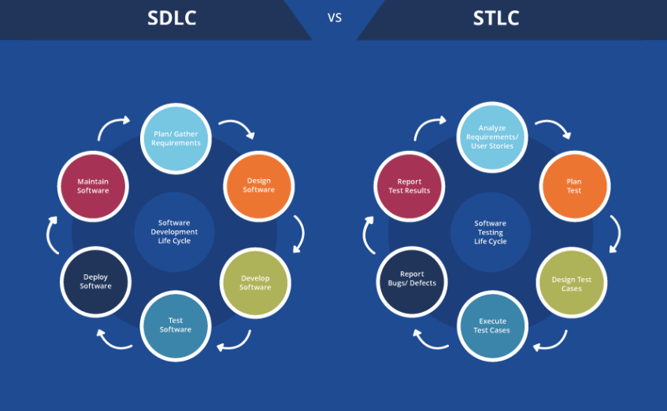

About testing
Testing

Requirements Analysis: In this phase, testers analyze the software requirements and specifications to understand the scope of testing. They identify
testable features, clarify any ambiguities, and define the testing objectives.
Test Planning: Test planning involves creating a comprehensive test plan that outlines the testing strategy, test objectives, test deliverables, resource allocation, and timelines. Testers identify the test environment,
test tools, and define the test approach.
Test Case Development: Test cases are created based on the requirements and test objectives defined in the previous phases. Testers design test scenarios and document
the steps to be executed, expected results, and any necessary test data.
Test Environment Setup: The test environment is prepared, including the setup of hardware, software, and network configurations required for testing. Testers ensure that the test environment
closely resembles the production environment to simulate real-world conditions accurately.
Test Execution: Testers execute the test cases based on the defined test plan. They record the actual results, compare them with the expected results, and log any defects found during testing. Test execution
involves various techniques such as manual testing, automated testing, or a combination of both.
Defect Reporting and Tracking: Any defects or issues identified during test execution are reported in a defect tracking system. Testers provide detailed information about each defect, including steps to reproduce, severity, priority, and associated test case information.
The defects are tracked throughout the life cycle until they are resolved.
Test Closure: The test closure phase involves evaluating
the overall testing process and gathering relevant test metrics. Testers review the test coverage, defect density, and other metrics to assess the effectiveness of testing. A test summary report is prepared to provide an overview of the testing activities,
outcomes, and recommendations for future improvements.
SDLC
Software development life cycle
What is the software development life cycle?
SDLC or the Software Development Life Cycle is a process that produces software with the highest quality and lowest cost in the shortest time possible. SDLC provides a well-structured flow of phases that help an organization to quickly produce high-quality software which is well-tested and ready for production use.
The SDLC involves six phases as explained in the introduction. Popular SDLC models include the waterfall model, spiral model, and Agile model.
STLC
Software testing life cycle
What is the software testing life cycle?
Software Testing Life Cycle (STLC) is a structured approach used in the software
development process to plan, design, execute, and evaluate software testing activities. It encompasses the entire testing process, from the identification
of testing requirements to the final delivery of a high-quality software product.
- Requirements Analysis
- Test Planning
- Test Case Development
- Test Environment Setup
- Test Execution
- Defect Reporting and Tracking
- Test Closure